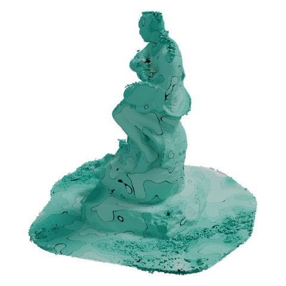
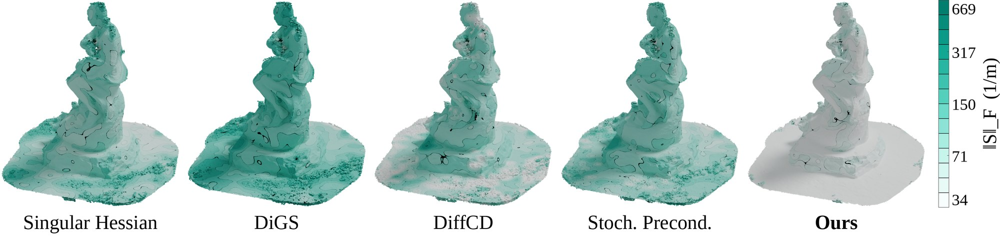
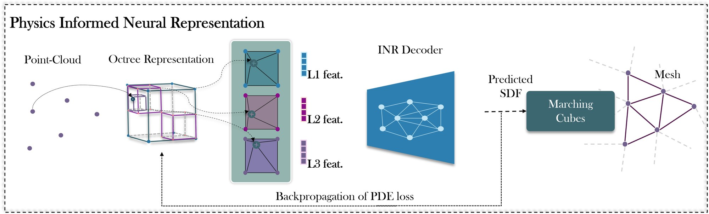
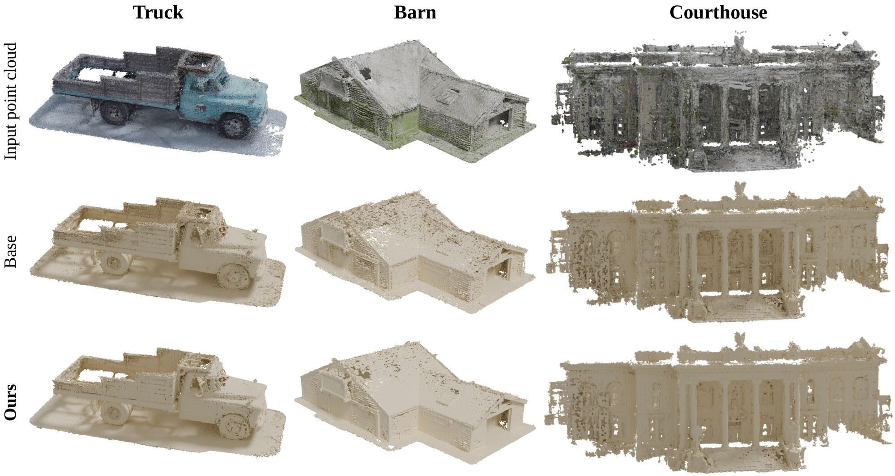
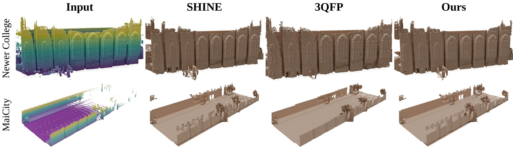

We cast LiDAR mapping as energy optimization: the reconstruction is formulated as a low-energy configuration of a neural signed distance field, one that minimizes the curvature energy of its level set while simultaneously satisfying the Eikonal constraint. This suppresses geometric jitter and high-frequency artifacts, giving smooth, geometrically consistent reconstructions of million-point LiDAR sweeps over open surfaces spanning hundreds of metres, with no extra cost at inference.


A LiDAR sweep observes surfaces, so we smooth the surface rather than the ambient field. For a neural SDF \(u\) with unit normal \(n = \nabla u / \|\nabla u\|\) and tangent projector \(P = I - nn^\top\), the shape operator and its energy are
where the eigenvalues of \(S\) are the principal curvatures, so \(\|S\|_F^2 = \kappa_1^2 + \kappa_2^2\). Unlike a raw Hessian penalty, \(E_S\) charges only for genuine bending: it ignores normal-direction curvature and changes in \(\|\nabla u\|\). A gradient–Hessian alignment term covers exactly that complementary block, so the two never double-count, and a minimal-surface term \(E_M\) penalizes spurious area:
The energy changes only the training objective. Architecture, sampling and inference are those of SHINE-Mapping, so there is no inference-time cost.
Compared regularizers in the paper and code: RegSDF, NeuralSSD, GradHess, Neural-Singular-Hessian, DiGS, SIREN, DiffCD and Stochastic Preconditioning.


@inproceedings{viswanath2027nieo,
title = {Neural Implicit Energy Optimization for LiDAR Mapping},
author = {Viswanath, Hrishikesh and Rahman, Md Ashiqur and Lin, Chi and Conover, Damon and Bera, Aniket},
booktitle = {Proceedings of the IEEE/CVF Winter Conference on Applications of Computer Vision (WACV)},
year = {2027}
}